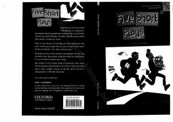

FSIngliz tilini o'rganuvchilar uchun mo'ljallangan beshta qiziqarli va ibratli pyesalar to'plami.
Ushbu kitob ingliz tilini o'rganuvchilar uchun mo'ljallangan beshta qiziqarli va kulgili pyesalardan iborat. Har bir pyesa qahramonlarning kutilmagan va qiyin vaziyatlarda to'g'ri qaror qabul qilishga urinishlari haqida hikoya qiladi.